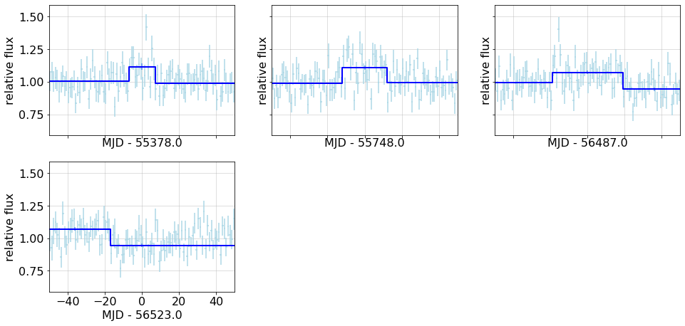

---

title: Analyses


keywords: fastai
sidebar: home_sidebar

summary: "Ongoing analyses"
description: "Ongoing analyses"
nb_path: "nbs/90_analysis.ipynb"
---
<!--

#################################################
### THIS FILE WAS AUTOGENERATED! DO NOT EDIT! ###
#################################################
# file to edit: nbs/90_analysis.ipynb
# command to build the docs after a change: nbdev_build_docs

-->

<div class="container" id="notebook-container">
        
    {% raw %}
    
<div class="cell border-box-sizing code_cell rendered">

</div>
    {% endraw %}

<div class="cell border-box-sizing text_cell rendered"><div class="inner_cell">
<div class="text_cell_render border-box-sizing rendered_html">
<p><strong>List of routines used for these analyses</strong></p>
<ul>
<li><a href="/light_curves/cells.html#get_cells"><code>get_cells</code></a></li>
<li><a href="/light_curves/lightcurve.html#get_lightcurve"><code>get_lightcurve</code></a></li>
<li><a href="/light_curves/bayesian.html#get_bb_partition"><code>get_bb_partition</code></a></li>
<li><a href="/light_curves/cells.html#partition_cells"><code>partition_cells</code></a></li>
<li><a href="/light_curves/lightcurve.html#fit_cells"><code>fit_cells</code></a></li>
<li><a href="/light_curves/bayesian.html#bb_overplot"><code>bb_overplot</code></a></li>
</ul>

</div>
</div>
</div>
    {% raw %}
    
<div class="cell border-box-sizing code_cell rendered">
<div class="input">

<div class="inner_cell">
    <div class="input_area">
<div class=" highlight hl-ipython3"><pre><span></span><span class="n">name</span><span class="o">=</span><span class="s1">&#39;Geminga&#39;</span>
<span class="n">config</span> <span class="o">=</span> <span class="n">Config</span><span class="p">()</span>
<span class="n">source</span> <span class="o">=</span> <span class="n">PointSource</span><span class="p">(</span><span class="n">name</span><span class="p">)</span>
<span class="n">lc</span> <span class="o">=</span> <span class="n">get_lightcurve</span><span class="p">(</span><span class="n">config</span><span class="p">,</span> <span class="n">source</span><span class="p">)</span>
<span class="n">data_cells</span> <span class="o">=</span> <span class="n">get_cells</span><span class="p">(</span><span class="n">config</span><span class="p">,</span> <span class="n">source</span><span class="p">)</span>
</pre></div>

    </div>
</div>
</div>

<div class="output_wrapper">
<div class="output">

<div class="output_area">

<div class="output_subarea output_stream output_stdout output_text">
<pre>Light curve for Geminga: Restoring from cache with key &#34;lightfcurve_Geminga&#34;
Cell data for Geminga: Restoring from cache with key &#34;cells_Geminga&#34;
</pre>
</div>
</div>

</div>
</div>

</div>
    {% endraw %}

    {% raw %}
    
<div class="cell border-box-sizing code_cell rendered">
<div class="input">

<div class="inner_cell">
    <div class="input_area">
<div class=" highlight hl-ipython3"><pre><span></span><span class="n">cq</span> <span class="o">=</span> <span class="n">data_cells</span><span class="o">.</span><span class="n">query</span><span class="p">(</span><span class="s1">&#39;e&gt;0.3&#39;</span><span class="p">)</span>
<span class="n">T</span><span class="p">,</span> <span class="n">N</span> <span class="o">=</span> <span class="n">np</span><span class="o">.</span><span class="n">sum</span><span class="p">(</span><span class="n">cq</span><span class="o">.</span><span class="n">tw</span><span class="p">),</span> <span class="n">np</span><span class="o">.</span><span class="n">sum</span><span class="p">(</span><span class="n">cq</span><span class="o">.</span><span class="n">n</span><span class="p">)</span>
<span class="n">T</span><span class="p">,</span> <span class="n">N</span><span class="p">,</span> <span class="n">N</span><span class="o">/</span><span class="n">T</span>
<span class="n">sim_cells</span> <span class="o">=</span> <span class="n">generate_cells</span><span class="p">(</span><span class="n">config</span><span class="p">,</span> <span class="n">source</span><span class="p">,</span>  <span class="n">source_flux</span><span class="o">=</span><span class="k">lambda</span> <span class="n">t</span><span class="p">:</span> <span class="n">N</span><span class="o">/</span><span class="n">T</span><span class="p">,</span> <span class="p">)</span>
<span class="n">sim_lc</span>  <span class="o">=</span> <span class="n">fit_cells</span><span class="p">(</span><span class="n">config</span><span class="p">,</span> <span class="n">sim_cells</span><span class="p">)</span> 
</pre></div>

    </div>
</div>
</div>

<div class="output_wrapper">
<div class="output">

<div class="output_area">

<div class="output_subarea output_stream output_stdout output_text">
<pre>binned exposure for source Geminga: Restoring from cache with key &#34;binned_exposure_Geminga&#34;
</pre>
</div>
</div>

<div class="output_area">

<div class="output_subarea output_text output_error">
<pre>
<span class="ansi-red-fg">---------------------------------------------------------------------------</span>
<span class="ansi-red-fg">NameError</span>                                 Traceback (most recent call last)
<span class="ansi-green-fg">&lt;ipython-input-18-6b2dc39e2b3d&gt;</span> in <span class="ansi-cyan-fg">&lt;module&gt;</span>
<span class="ansi-green-intense-fg ansi-bold">      2</span> T<span class="ansi-blue-fg">,</span> N <span class="ansi-blue-fg">=</span> np<span class="ansi-blue-fg">.</span>sum<span class="ansi-blue-fg">(</span>cq<span class="ansi-blue-fg">.</span>tw<span class="ansi-blue-fg">)</span><span class="ansi-blue-fg">,</span> np<span class="ansi-blue-fg">.</span>sum<span class="ansi-blue-fg">(</span>cq<span class="ansi-blue-fg">.</span>n<span class="ansi-blue-fg">)</span>
<span class="ansi-green-intense-fg ansi-bold">      3</span> T<span class="ansi-blue-fg">,</span> N<span class="ansi-blue-fg">,</span> N<span class="ansi-blue-fg">/</span>T
<span class="ansi-green-fg">----&gt; 4</span><span class="ansi-red-fg"> </span>sim_cells <span class="ansi-blue-fg">=</span> generate_cells<span class="ansi-blue-fg">(</span>config<span class="ansi-blue-fg">,</span> source<span class="ansi-blue-fg">,</span>  source_flux<span class="ansi-blue-fg">=</span><span class="ansi-green-fg">lambda</span> t<span class="ansi-blue-fg">:</span> N<span class="ansi-blue-fg">/</span>T<span class="ansi-blue-fg">,</span> <span class="ansi-blue-fg">)</span>
<span class="ansi-green-intense-fg ansi-bold">      5</span> sim_lc  <span class="ansi-blue-fg">=</span> fit_cells<span class="ansi-blue-fg">(</span>config<span class="ansi-blue-fg">,</span> sim_cells<span class="ansi-blue-fg">)</span>

<span class="ansi-green-fg">/mnt/c/users/thbur/OneDrive/work/light_curves/light_curves/simulation.py</span> in <span class="ansi-cyan-fg">generate_cells</span><span class="ansi-blue-fg">(config, source, wdist, source_flux)</span>
<span class="ansi-green-intense-fg ansi-bold">    120</span> 
<span class="ansi-green-intense-fg ansi-bold">    121</span>     cells<span class="ansi-blue-fg">=</span><span class="ansi-blue-fg">[</span><span class="ansi-blue-fg">]</span>
<span class="ansi-green-fg">--&gt; 122</span><span class="ansi-red-fg">     </span>wdist <span class="ansi-blue-fg">=</span> wdist <span class="ansi-green-fg">or</span> get_weight_hist<span class="ansi-blue-fg">(</span>config<span class="ansi-blue-fg">,</span> source<span class="ansi-blue-fg">)</span>
<span class="ansi-green-intense-fg ansi-bold">    123</span>     <span class="ansi-green-fg">for</span> i<span class="ansi-blue-fg">,</span> e <span class="ansi-green-fg">in</span> enumerate<span class="ansi-blue-fg">(</span>fexp<span class="ansi-blue-fg">)</span><span class="ansi-blue-fg">:</span>
<span class="ansi-green-intense-fg ansi-bold">    124</span>         a<span class="ansi-blue-fg">,</span>b <span class="ansi-blue-fg">=</span> bins<span class="ansi-blue-fg">[</span>i<span class="ansi-blue-fg">:</span>i<span class="ansi-blue-fg">+</span><span class="ansi-cyan-fg">2</span><span class="ansi-blue-fg">]</span>

<span class="ansi-red-fg">NameError</span>: name &#39;get_weight_hist&#39; is not defined</pre>
</div>
</div>

</div>
</div>

</div>
    {% endraw %}

    {% raw %}
    
<div class="cell border-box-sizing code_cell rendered">
<details class="description">
      <summary data-open="Hide Code" data-close="Show Code"></summary>
        <summary></summary>
        <div class="input">

<div class="inner_cell">
    <div class="input_area">
<div class=" highlight hl-ipython3"><pre><span></span><span class="k">def</span> <span class="nf">analysis_plots</span><span class="p">(</span><span class="n">name</span><span class="p">):</span>
    <span class="sd">&quot;&quot;&quot;</span>
<span class="sd">    ### Geminga light curve with Bayesian Blocks partition, fits to blocks</span>
<span class="sd">    </span>
<span class="sd">    {output}</span>
<span class="sd">    </span>
<span class="sd">    This shows the fits to all cells, with the BB fit overlays</span>
<span class="sd">    {fig1}</span>
<span class="sd">    </span>
<span class="sd">    Since this is a constant source, there should be no breaks, that is, only one partition.</span>
<span class="sd">    Here is a table of the partition fits:</span>
<span class="sd">    </span>
<span class="sd">    {df_text}</span>
<span class="sd">    The last column represents the compatibility of the flux measuremnt for each partition</span>
<span class="sd">    with the expected value 1.0 in equivalent sigma units.</span>
<span class="sd">    </span>
<span class="sd">    Finally, look at plots for the short, &lt; 100 day partitions.</span>
<span class="sd">    {fig2}</span>
<span class="sd">    &quot;&quot;&quot;</span>
    <span class="n">config</span> <span class="o">=</span> <span class="n">Config</span><span class="p">()</span>
    <span class="n">source</span> <span class="o">=</span> <span class="n">PointSource</span><span class="p">(</span><span class="n">name</span><span class="p">)</span>
    <span class="c1"># need both light curve and cells</span>
    
    <span class="k">with</span> <span class="n">capture_print</span><span class="p">(</span>
        <span class="s1">&#39;Analysis output: get cells, fit each, partition with BB, fit each partition&#39;</span>
                    <span class="p">)</span> <span class="k">as</span> <span class="n">output</span><span class="p">:</span>

        <span class="n">lc</span> <span class="o">=</span> <span class="n">get_lightcurve</span><span class="p">(</span><span class="n">config</span><span class="p">,</span> <span class="n">source</span><span class="p">)</span>
        <span class="n">cells</span> <span class="o">=</span> <span class="n">get_cells</span><span class="p">(</span><span class="n">config</span><span class="p">,</span> <span class="n">source</span><span class="p">)</span>
        <span class="n">edges</span> <span class="o">=</span> <span class="n">get_bb_partition</span><span class="p">(</span><span class="n">config</span><span class="p">,</span> <span class="n">lc</span><span class="p">,</span> <span class="n">LikelihoodFitness</span><span class="p">,</span> <span class="n">key</span><span class="o">=</span><span class="s1">&#39;bb-Geminga-test&#39;</span><span class="p">)</span> 

        <span class="n">bb_cells</span> <span class="o">=</span> <span class="n">partition_cells</span><span class="p">(</span><span class="n">config</span><span class="p">,</span> <span class="n">cells</span><span class="p">,</span> <span class="n">edges</span><span class="p">);</span>
        <span class="n">bb_fit</span>  <span class="o">=</span> <span class="n">fit_cells</span><span class="p">(</span><span class="n">config</span><span class="p">,</span> <span class="n">bb_cells</span><span class="p">,</span> <span class="p">)</span>
    <span class="n">fits</span> <span class="o">=</span> <span class="n">bb_fit</span><span class="o">.</span><span class="n">fit</span>
    <span class="n">flux</span> <span class="o">=</span> <span class="n">fits</span><span class="o">.</span><span class="n">apply</span><span class="p">(</span><span class="k">lambda</span> <span class="n">f</span><span class="p">:</span> <span class="n">f</span><span class="o">.</span><span class="n">flux</span><span class="p">)</span>
    <span class="n">errors</span> <span class="o">=</span> <span class="n">fits</span><span class="o">.</span><span class="n">apply</span><span class="p">(</span><span class="k">lambda</span> <span class="n">f</span><span class="p">:</span> <span class="p">(</span><span class="nb">round</span><span class="p">(</span><span class="n">f</span><span class="o">.</span><span class="n">flux</span><span class="o">-</span><span class="n">f</span><span class="o">.</span><span class="n">errors</span><span class="p">[</span><span class="mi">0</span><span class="p">],</span><span class="mi">3</span><span class="p">),</span> <span class="nb">round</span><span class="p">(</span><span class="n">f</span><span class="o">.</span><span class="n">errors</span><span class="p">[</span><span class="mi">1</span><span class="p">]</span><span class="o">-</span><span class="n">f</span><span class="o">.</span><span class="n">flux</span> <span class="p">,</span><span class="mi">3</span><span class="p">)</span> <span class="p">)</span> <span class="p">)</span>
    <span class="n">sigma_dev</span> <span class="o">=</span> <span class="n">fits</span><span class="o">.</span><span class="n">apply</span><span class="p">(</span><span class="k">lambda</span> <span class="n">f</span><span class="p">:</span> <span class="nb">round</span><span class="p">(</span><span class="n">f</span><span class="o">.</span><span class="n">poiss</span><span class="o">.</span><span class="n">sigma_dev</span><span class="p">(</span><span class="mi">1</span><span class="p">),</span><span class="mi">1</span><span class="p">)</span> <span class="p">)</span>
    <span class="n">df</span> <span class="o">=</span> <span class="n">bb_fit</span><span class="p">[</span><span class="s1">&#39;t tw n e&#39;</span><span class="o">.</span><span class="n">split</span><span class="p">()];</span> <span class="n">df</span>
    <span class="n">df</span><span class="o">.</span><span class="n">loc</span><span class="p">[:,</span><span class="s1">&#39;flux&#39;</span><span class="p">]</span> <span class="o">=</span> <span class="n">flux</span><span class="o">.</span><span class="n">values</span><span class="o">.</span><span class="n">round</span><span class="p">(</span><span class="mi">3</span><span class="p">)</span>
    <span class="n">df</span><span class="o">.</span><span class="n">loc</span><span class="p">[:,</span> <span class="s1">&#39;errors&#39;</span><span class="p">]</span> <span class="o">=</span> <span class="n">errors</span><span class="o">.</span><span class="n">values</span>
    <span class="n">df</span><span class="o">.</span><span class="n">loc</span><span class="p">[:,</span> <span class="s1">&#39;sigma_dev&#39;</span><span class="p">]</span> <span class="o">=</span> <span class="n">sigma_dev</span><span class="o">.</span><span class="n">values</span>

    <span class="n">pd</span><span class="o">.</span><span class="n">set_option</span><span class="p">(</span><span class="s1">&#39;display.precision&#39;</span><span class="p">,</span> <span class="mi">2</span><span class="p">)</span><span class="c1">#, &#39;display.colheader_justify&#39;,&#39;left&#39;)</span>
    <span class="n">df_text</span> <span class="o">=</span> <span class="n">monospace</span><span class="p">(</span><span class="nb">str</span><span class="p">(</span><span class="n">df</span><span class="p">),</span> <span class="s1">&#39;BB fit table&#39;</span><span class="p">,</span> <span class="nb">open</span><span class="o">=</span><span class="kc">True</span><span class="p">)</span>
        
    <span class="n">plt</span><span class="o">.</span><span class="n">rc</span><span class="p">(</span><span class="s1">&#39;font&#39;</span><span class="p">,</span> <span class="n">size</span><span class="o">=</span><span class="mi">16</span><span class="p">)</span>
    <span class="n">fig1</span><span class="p">,</span> <span class="n">ax</span> <span class="o">=</span> <span class="n">plt</span><span class="o">.</span><span class="n">subplots</span><span class="p">(</span><span class="mi">1</span><span class="p">,</span><span class="mi">1</span><span class="p">,</span> <span class="n">sharex</span><span class="o">=</span><span class="kc">True</span><span class="p">,</span> <span class="n">figsize</span><span class="o">=</span><span class="p">(</span><span class="mi">10</span><span class="p">,</span><span class="mi">4</span><span class="p">),</span> <span class="n">num</span><span class="o">=</span><span class="mi">1</span><span class="p">)</span>
    <span class="n">bb_overplot</span><span class="p">(</span><span class="n">config</span><span class="p">,</span> <span class="n">lc</span><span class="p">,</span> <span class="n">bb_fit</span><span class="p">,</span> <span class="n">ax</span> <span class="o">=</span> <span class="n">ax</span><span class="p">)</span>
    <span class="n">ax</span><span class="o">.</span><span class="n">text</span><span class="p">(</span><span class="mf">0.05</span><span class="p">,</span> <span class="mf">0.85</span><span class="p">,</span> <span class="n">name</span><span class="p">,</span>  <span class="n">transform</span><span class="o">=</span><span class="n">ax</span><span class="o">.</span><span class="n">transAxes</span><span class="p">);</span>
    <span class="n">fig1</span><span class="o">.</span><span class="n">width</span><span class="o">=</span><span class="mi">600</span>


    <span class="n">bb_short</span> <span class="o">=</span> <span class="n">bb_fit</span><span class="o">.</span><span class="n">query</span><span class="p">(</span><span class="s1">&#39;tw&lt;100&#39;</span><span class="p">);</span>

    <span class="n">fig2</span><span class="p">,</span> <span class="n">axx</span> <span class="o">=</span> <span class="n">plt</span><span class="o">.</span><span class="n">subplots</span><span class="p">(</span><span class="mi">3</span><span class="p">,</span><span class="mi">3</span><span class="p">,</span> <span class="n">figsize</span><span class="o">=</span><span class="p">(</span><span class="mi">15</span><span class="p">,</span> <span class="mi">12</span><span class="p">),</span><span class="n">sharey</span><span class="o">=</span><span class="kc">True</span><span class="p">,</span> <span class="n">sharex</span><span class="o">=</span><span class="kc">True</span><span class="p">,</span>
                          <span class="n">gridspec_kw</span><span class="o">=</span><span class="nb">dict</span><span class="p">(</span><span class="n">top</span><span class="o">=</span><span class="mf">0.85</span><span class="p">,</span> <span class="n">left</span><span class="o">=</span><span class="mf">0.08</span><span class="p">,</span> <span class="n">bottom</span><span class="o">=</span><span class="mf">0.15</span><span class="p">,</span> <span class="n">hspace</span><span class="o">=</span><span class="mf">0.2</span> <span class="p">),</span><span class="n">num</span><span class="o">=</span><span class="mi">2</span><span class="p">)</span>
    <span class="n">fig2</span><span class="o">.</span><span class="n">width</span><span class="o">=</span><span class="mi">600</span>
    <span class="k">for</span> <span class="n">t</span><span class="p">,</span> <span class="n">ax</span> <span class="ow">in</span> <span class="nb">zip</span><span class="p">(</span><span class="n">bb_short</span><span class="o">.</span><span class="n">t</span><span class="p">,</span> <span class="n">axx</span><span class="o">.</span><span class="n">flatten</span><span class="p">()):</span>
        <span class="n">bb_overplot</span><span class="p">(</span><span class="n">config</span><span class="p">,</span> <span class="n">lc</span><span class="p">,</span> <span class="n">bb_fit</span><span class="p">,</span> <span class="n">ax</span><span class="o">=</span><span class="n">ax</span><span class="p">,</span> <span class="n">tzero</span><span class="o">=</span><span class="n">t</span><span class="p">,</span> <span class="n">xlim</span><span class="o">=</span><span class="p">(</span><span class="o">-</span><span class="mi">50</span><span class="p">,</span> <span class="o">+</span><span class="mi">50</span><span class="p">))</span>
        
    <span class="k">return</span> <span class="nb">locals</span><span class="p">()</span>

<span class="k">if</span> <span class="n">Config</span><span class="p">()</span><span class="o">.</span><span class="n">valid</span><span class="p">:</span>
    <span class="n">nbdoc</span><span class="p">(</span><span class="n">analysis_plots</span><span class="p">,</span> <span class="s1">&#39;Geminga&#39;</span><span class="p">)</span>
</pre></div>

    </div>
</div>
</div>

    </details>
<div class="output_wrapper">
<div class="output">

<div class="output_area">


<div class="output_markdown rendered_html output_subarea ">
<h3 id="Geminga-light-curve-with-Bayesian-Blocks-partition,-fits-to-blocks">Geminga light curve with Bayesian Blocks partition, fits to blocks<a class="anchor-link" href="#Geminga-light-curve-with-Bayesian-Blocks-partition,-fits-to-blocks"> </a></h3><p><details  class="nbdoc-description" >  <summary> Analysis output: get cells, fit each, partition with BB, fit each partition </summary>  <div style="margin-left: 5%"><pre>Light curve for Geminga: Restoring from cache with key "lightfcurve_Geminga"<br>Cell data for Geminga: Restoring from cache with key "cells_Geminga"<br>BB edges for...: Restoring from cache with key "bb-Geminga-test"<br>Partitioned 3873 cells into 17 blocks, using LikelihoodFitness <br>Loaded 17 / 17 cells with exposure &gt; 0.3 for fitting<br></pre></div> </details></p>
<p>This shows the fits to all cells, with the BB fit overlays</p>
<div class="nbdoc_image">
<a href="images/analysis_plots_fig_01.png"><figure style="margin-left: 5%">
    
</figure></a></div><p>Since this is a constant source, there should be no breaks, that is, only one partition.
Here is a table of the partition fits:</p>
<p><details open class="nbdoc-description" >  <summary> BB fit table </summary>  <div style="margin-left: 5%"><pre>          t      tw       n     e  flux          errors  sigma_dev<br>0   55027.0   688.0  207832  1.13  1.00  (0.003, 0.003)       -0.5<br>1   55378.0    14.0    3797  0.91  1.12  (0.024, 0.025)        5.1<br>2   55560.5   351.0   96416  1.03  0.98  (0.004, 0.004)       -3.5<br>3   55748.0    24.0    6887  0.96  1.12  (0.018, 0.018)        7.0<br>4   56113.0   706.0  190965  1.01  0.99  (0.003, 0.003)       -2.8<br>5   56486.0    40.0   11267  0.99  1.07  (0.014, 0.014)        5.3<br>6   56512.5    13.0    3402  1.05  0.90  (0.021, 0.022)       -4.4<br>7   56673.5   309.0   84043  1.02  0.99  (0.005, 0.005)       -2.3<br>8   56879.5   103.0   28168  1.00  1.03  (0.008, 0.008)        3.2<br>9   56972.5    83.0   20961  0.96  0.97  (0.009, 0.009)       -3.7<br>10  57017.5     7.0    2070  0.97  1.16  (0.034, 0.034)        4.8<br>11  57109.0   176.0   45616  0.95  1.00  (0.006, 0.006)        0.5<br>12  57197.5     1.0     149  0.85  0.54  (0.066, 0.071)       -5.6<br>13  57723.0  1050.0  285243  1.01  0.99  (0.003, 0.003)       -2.9<br>14  58274.0    52.0    9282  0.62  1.07  (0.015, 0.015)        4.8<br>15  58468.5   337.0   74075  0.81  0.99  (0.005, 0.005)       -1.7<br>16  58667.0    60.0   10261  0.59  1.08  (0.015, 0.015)        5.5</pre></div> </details>
The last column represents the compatibility of the flux measuremnt for each partition
with the expected value 1.0.</p>
<p>Finally, look at plots for the short, &lt; 100 day partitions.</p>
<div class="nbdoc_image">
<a href="images/analysis_plots_fig_02.png"><figure style="margin-left: 5%">
    
</figure></a></div>
</div>

</div>

</div>
</div>

</div>
    {% endraw %}

    {% raw %}
    
<div class="cell border-box-sizing code_cell rendered">
<div class="input">

<div class="inner_cell">
    <div class="input_area">
<div class=" highlight hl-ipython3"><pre><span></span><span class="o">!</span>date
</pre></div>

    </div>
</div>
</div>

<div class="output_wrapper">
<div class="output">

<div class="output_area">

<div class="output_subarea output_stream output_stdout output_text">
<pre>Mon Dec 21 09:01:03 PST 2020
</pre>
</div>
</div>

</div>
</div>

</div>
    {% endraw %}

</div>
 

